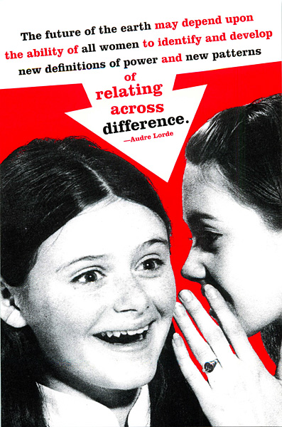

2013
Friday, May 10
I can't believe it's over, but it is. There's no other way of putting it: my 10 weeks is up, and I no longer have the daily structure and constant community support of Hackbright v3.0. But the structure and support will be there still, I know.
It has been splendorous and beautiful and scary. I can say that because I sit here throwing up a bit of text onto the interwebs, early on a Friday night, the whirlwind of the last 10 weeks having finally revealed itself as a beautiful watercolor tornado, made of bandwidth and Zed Shaw, and machine learning tutorials and github and Union Square and coffee. A lot of Coffee. Tonight at Hackbright, people are skittering about our office flat, in and out of rooms, lounging, watching chick flicks, practicing list operations, and saying a few goodbyes.
I'm trying to stay focused because everyday new opportunities abound, and the real meaning of all this sentimentality about Hackbright is that I have a new pair of sunglasses that blocks out all the boring stuff and lets in all the cool stuff. I'm trying to say I can look at the world in a new way now. This new pair of sunglasses happens to pair with hoodies quite nicely. That was very corny.

Thursday, May 23
I've been interviewing for software engineering jobs for the last two weeks now. The following Monday after Hackbright ended saw the first interview, and then one on Wednesday, Friday, Monday, and Wednesday again. I've had overall positive experiences; I'm surprised at how much I'm able to accomplish during the technical component. I tend to work slowly (I imagine) and ask many questions. Teasing out a solution is a rush, actually. As opposed to the idea in my head- a quiz-like setting - I am the only one playing for my own team, and it's as if the interviewer isn't event there. Sort of.
I haven't been applying any filter for the jobs I apply to as of yet. I will start that this week, though. Now that I've conquered, to an extent, the fear of interviewing, I'm intent on finding the infamous "Good Fit" in terms of location and job expectations.
A lot of the advice I get about getting an engineering job tends to make me feel like I should forget everything I ever knew about myself. I incur the identity of some generic starting engineer, who can and can't understand certain things about what will happen next. I've accepted this fate, in a sense, because it calms me down. I'm not alone then, ergonomically waiting to speak with the next CEO or VP of engineering. And yet, I hope for a greater level of caution on my part, in terms of where I go next.